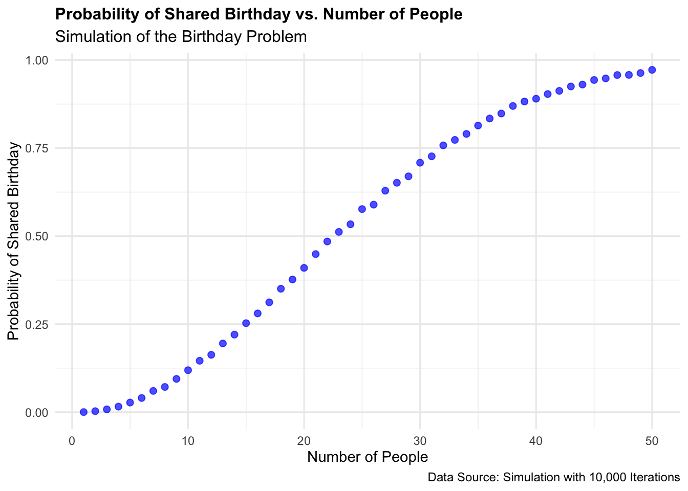

birthdays <- sample(1:366, 23, replace = TRUE) The Birthday Problem
Background
The Birthday Problem The birthday paradox, often termed as the birthday problem, is a perplexing phenomenon in probability theory that challenges common intuitions regarding the likelihood of shared birthdays within a group of individuals. Contrary to what one might expect, the paradox posits that in a relatively small gathering, the probability of at least two people sharing the same birthday is surprisingly high. This paradox arises due to the counterintuitive nature of combinatorial probabilities, where the focus shifts from the likelihood of a specific individual sharing a birthday with another to the broader scenario of any two individuals sharing a birthday within the group. Through combinatorial analysis and application of the principle of inclusion-exclusion, the birthday paradox unveils that as the number of individuals increases, the probability of shared birthdays escalates at a much faster rate than anticipated, reaching a point where it becomes highly probable, even in seemingly small groups. This paradox holds significant implications in various fields, including cryptography, networking, and epidemiology, where understanding the underlying principles of probability is crucial for accurate risk assessment and decision-making.
What we know We know in advance that the answer should be 23 birthdays should give us a 50% probability that two of the people in our sample will have the same birthday. We wrote this is code by taking a sample of 1 though 366 represeting the days of the year, and then taking a random sample of 23 numbers. We must incluce replace = TRUE or else R will give us distinct values.
Making Dataset
We make a dataset from our function so we can work with the same data for a little bit while doing out statistical analysis. The duplicated function is helpful in this case as it can find when two numbers in the same output set are the same. It will return a list of trues and falses. If two numbers are the same, the function will return a false for the first time that number appeasers but will return TRUE for the second time that number appears.
Boolean vales in R are handy because they are read as either a 1 or a zero. That means we can use the max function to see if there was a match. If the function returns a 0 then there were no matching birthdays and if it retuns a 1 then there were matching birthdays.
birthdays <- sample(1:366, 23, replace = TRUE)
birthdays |>
duplicated() [1] FALSE FALSE FALSE FALSE FALSE FALSE FALSE FALSE FALSE FALSE FALSE FALSE
[13] FALSE FALSE FALSE FALSE TRUE FALSE FALSE TRUE FALSE FALSE FALSEbirthdays |>
duplicated() |>
max()[1] 1Using a for loop for mass repetition
The for loop iterates over the numbers 1 to 10000.
Within each iteration: 1. It generates a sample of 23 birthdays representing possible days in a year with replacement. 2. It checks for duplicated birthdays within the sample. 3. It assigns the result of whether duplicates were found TRUE or FALSE to the corresponding row in the match column of the matches data frame.
matches <- data.frame(rep = 1:10000, match = NA)
for(i in 1:10000){
birthdays <- sample(1:366, 23, replace = TRUE)
matches$match[i] <- birthdays |>
duplicated() |>
max()
}
matches |>
summarize(mean(match),
se = sd(match)/sqrt(10000)) mean(match) se
1 0.5017 0.005000221Creating a function
The function I titled birthday_problem, takes two parameters: people and iterations, representing the number of iterations to perform with the default being 10,000.
Within the function: 1. It initializes a data frame called matches with two columns: rep and match, with rep ranging from 1 to the specified number of iterations, and match initially filled with NA values. 2. It iterates over the specified number of iterations, again the defualt being 10,000. 3. Within each iteration - Refer to the for loop :) 4. After all iterations, it calculates the mean of the match column, standard error, and includes information about the number of people and iterations. 5. It returns a summary data frame containing the mean, standard error, number of people, and number of iterations.
birthday_problem <- function(people, iterations = 10000) {
matches <- data.frame(rep = 1:iterations, match = NA)
for(i in 1:iterations){
birthdays <- sample(1:366, people, replace = TRUE)
matches$match[i] <- birthdays |>
duplicated() |>
max()
}
matches |>
summarize(mean1 = mean(match),
se = sd(match)/sqrt(iterations),
people = people,
iterations = iterations)
}Easy way to run
The function, when called with people = 23, simulates the birthday problem scenario for 23 people. It generates random samples of 23 birthdays, checks for duplicates within each sample, and repeats this process for 10,000 iterations by default as explained earlier. The output will be a summary data frame with the mean probability, standard error, number of people, and number of iterations.
birthday_problem(23) mean1 se people iterations
1 0.5115 0.004998927 23 10000Preparing to graph
This R code iterates over the numbers from 1 to 50, calling the birthday_problem function for each number, and storing the results in a list called results_list.
For each iteration: 1. It calls the birthday_problem function with the current number (people_input) as the argument. 2. It appends the result. In other words, a summary data frame containing mean probability, standard error, number of people, and number of iterations to the results_list.
After iterating over all numbers from 1 to 50, it combines all the summary data frames stored in results_list into a single data frame called results_birthday using do.call(rbind, results_list). This binds all the rows together into one data frame, stacking the results for each number of people on top of each other.
results_list <- list()
for (people_input in seq(1, 50)) {
results_list[[length(results_list) + 1]] <- birthday_problem(people_input)
}
results_birthday <- do.call(rbind, results_list)The results_birthday data frame is used as the data source for the plot.
ggplot(results_birthday, aes(x = people, y = mean1)) +
geom_point(color = "blue", size = 2, alpha = 0.7) +
labs(x = "Number of People", y = "Probability of Shared Birthday",
title = "Probability of Shared Birthday vs. Number of People",
subtitle = "Simulation of the Birthday Problem",
caption = "Data Source: Simulation with 10,000 Iterations") +
theme_minimal() +
theme(legend.position = "none",
plot.title = element_text(size = 12, face = "bold"),
plot.subtitle = element_text(size = 12),
plot.caption = element_text(size = 9)) 